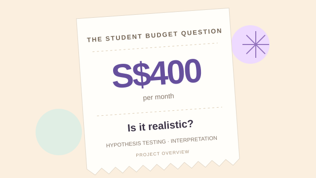

Statistical research · Group project
Student Budget Statistical Analysis
An IT1224 group project using survey data and Python to test a S$400 monthly student budget, with my contribution focused on the one-sample t-test.

S$400 was the benchmark tested in the study.
The research question
Do polytechnic students spend more than S$400 per month, and does spending differ between Design & Media students and students in other courses?
Our five-member group examined these questions through a preliminary survey, descriptive statistics, and hypothesis testing, then discussed how the findings could inform student support.
My contribution
- Researched and identified data sources for the study.
- Formulated the hypotheses for the one-sample t-test.
- Conducted the one-sample t-test analysis.
- Drafted the results, outcome, discussion, and conclusion sections relating to that test.
How we approached the analysis
- Collect the survey dataOur Google Forms survey gathered 21 responses about monthly expenditure, field of study, allowance sources, spending categories, and spending decisions.
- Describe the sampleWe summarised spending for all respondents and compared the descriptive statistics for Design & Media students and students from other courses.
- Test the S$400 benchmarkThe one-sample test used H0: μ ≤ S$400 and H1: μ > S$400. It was right-tailed, with a 5% significance level and 20 degrees of freedom. Calculations were performed in Python using SciPy.
What the results showed
| Student group | Responses | Mean monthly spending |
|---|---|---|
| All respondents | 21 | S$760.48 |
| Design & Media | 11 | S$1,137.27 |
| Other courses | 10 | S$346.00 |
The one-sample t-test reported t = 1.2003 and p = 0.1220. Since the p-value was above 0.05, we failed to reject the null hypothesis: the study did not provide statistically significant evidence that average monthly spending exceeded S$400.
Spending varied widely, with an overall standard deviation of S$1,376.21. The report also recorded a p-value of 0.0977 for the comparison between course groups, which did not meet the 5% significance threshold.
Interpretation: A higher sample mean does not by itself establish a higher population mean. The small sample and high variability limit the conclusions; this result also does not prove that S$400 is sufficient for every student.
From findings to recommendations
As part of the assignment, our group proposed a S$600 base bursary and a S$800 tier for resource-intensive courses such as Design & Media. These were proposals for further investigation, to be considered alongside the small sample and non-significant test results.
Skills demonstrated
Research, hypothesis formulation, Python-based statistical analysis, and clear communication of results and their limits.
Project report
Read the complete IT1224 group report for the background, survey, hypotheses, test results, recommendations, and member contributions.
Let's build something useful.
I'm open to IT internships where I can contribute, learn from a team, and turn ideas into practical work.